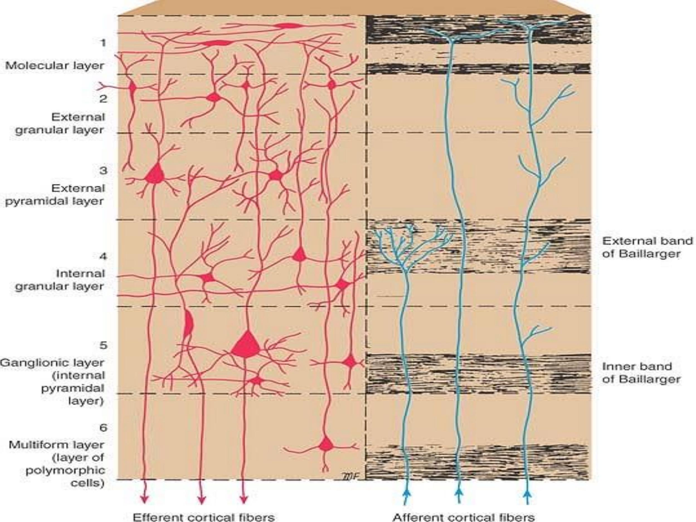
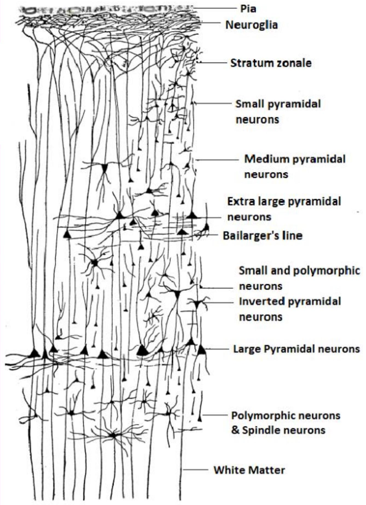
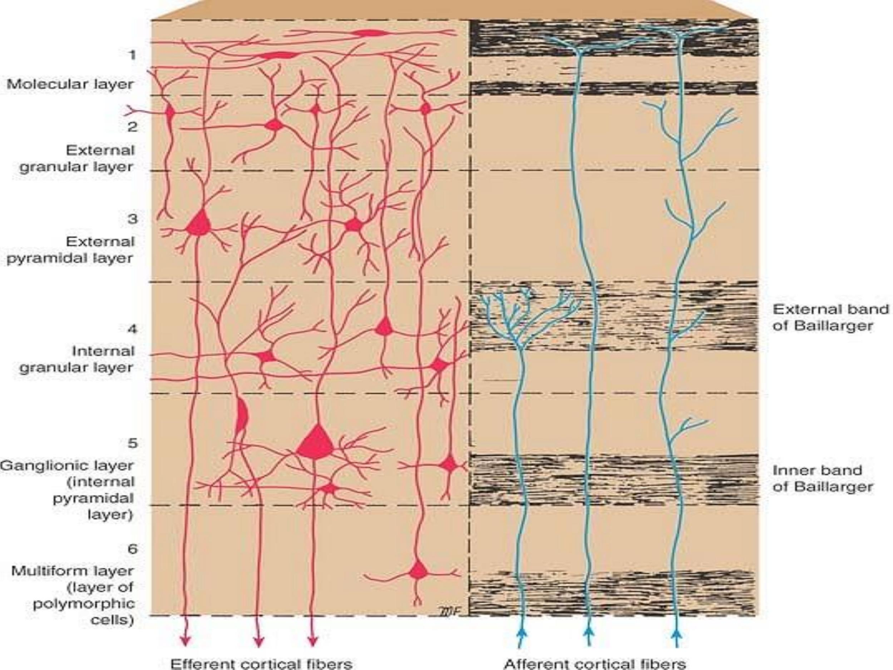
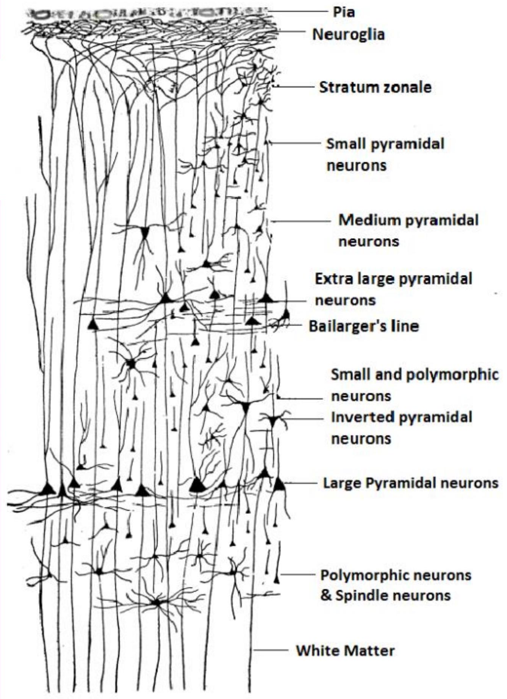
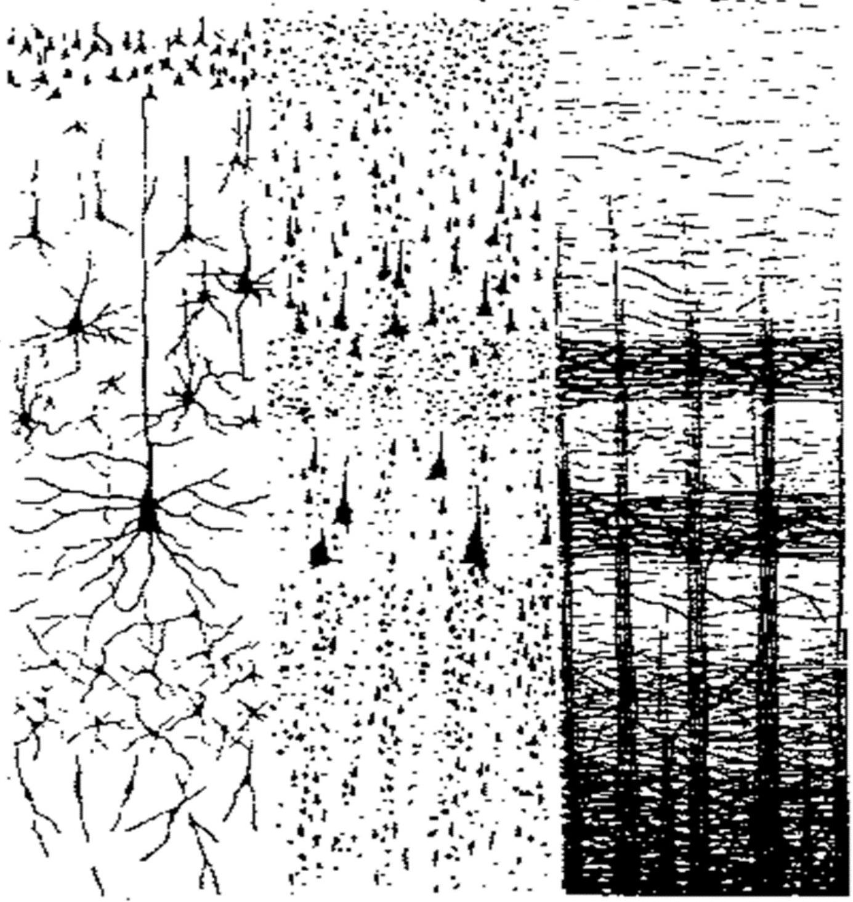

NEUROHISTOLOGY IV: CEREBRUM & CEREBELLUM
CEREBRUM - EXPECTED LEARNING OUTCOMES
- Name the parts and subparts of the cerebrum
- Outline the fiber types of the cerebral white matter, with examples
- State the components and function of the basal ganglia*
- Name the cell types and layers of the cerebral cortex
- Familiarize with the phylogenetic classification of the cortex
- State the characteristics of a "Cortical module"
HISTOLOGICAL ORGANIZATION OF THE CEREBRUM

- Has the cerebral hemispheres and the diencephalon
- Components of diencephalon?
- The hemispheres consist of cortex, white matter and the basal nuclei

CEREBRAL WHITE MATTER

BASAL NUCLEI (BASAL GANGLIA)

- Subcortical nuclear masses that lie in the inferior part of the cerebral hemisphere
- Associated with diencephalon and midbrain
- Control of movement
SECTIONS OF THE CEREBRUM
THE CEREBRAL CORTEX
- About $2.4 \mathrm{~mm}-2.8 \mathrm{~mm}$ thick in humans
- Outer layer of the grey matter of the cerebral hemisphere
- Sophisticated composite of nerve cell bodies, nerve fibers, neuroglia and blood vessels
CELL TYPES OF THE CEREBRAL CORTEX
- Neuronal and neuroglial cell types
- Neuroglial cells
- Neuronal cell types
- Pyramidal cells
- Non-pyramidal cells - stellate/granule cells
PYRAMIDAL CELLS
NON-PYRAMIDAL CELLS
- Stellate or granule cells
- Divided into spiny and non-spiny neurons
SPINY STELLATE CELLS
- Have small multipolar cell bodies
- Have several primary dendrites, profusely covered in spines
- Axons ramify within the grey matter predominantly in the vertical plane
NON-SPINY STELLATE CELLS
- Interneurons, axons confined to grey matter
- Multitude of different cells - basket, chandelier, double bouquet, horizontal cells (of Cajal) etc
Horizontally, vertically or radially ramifying axons
- Predominantly GABAergic

PHYLOGENETIC CLASSIFICATION OF THE CEREBRAL CORTEX
- Older cortex - Allocortex
- Archicortex
- Palaeocortex
- Newer cortex - Neocortex
LAMINAR ORGANIZATION OF THE CEREBRAL CORTEX
- Typical neocortex is described as having six layers or laminae lying parallel to the surface
 



Layer 1
Layer 2
Layer 3
Layer 4
Layer 5
Layer 6
1. MOLECULAR LAYER
2. EXTERNAL GRANULAR LAYER
3 EXTERNAL PYRAMIDAL lAYER
4. INTERNAL GRANULAR LAYER
5. INTERNAL PYRAINIDAL LAYER
6. MULTIFORM LAYER

1. MOLECULAR LAYER
2. EXTERNAL GRANULAR LAYER
3 EXTERNAL PYRAMIDAL layer
4. INTERNAL GRANULAR LAYER
5. INTERNAL PYRAIMIDAL LAYER
6. MULTIFORM LAYER

1. MOLECULAR LAYER
2. EXTERNAL GRANULAR LAYER
3 EXTERNAL PYRAMIDAL layer
4. INTERNAL GRANULAR LAYER
5. INTERNAL PYRAMIDAL LAYER
6. MULTIFORM LAYER

1. MOLECULAR LAYER
2. EXTERNAL GRANULAR LAYER
3 EXTERNAL PYRAMIDAL layer
4. INTERNAL GRANULAR LAYER
5. INTERNAL PYRAMIDAL LAYER
6. MULTIFORM LAYER
1. MOLECULAR LAYER
2. EXTERNAL GRANULAR LAYER
3 EXTERNAL PYRAMIDAL layer
4. INTERNAL GRANULAR LAYER
5. INTERNAL PYRANIDAL LAYER
6. MULTIFORM LAYER

REGIONAL VARIATIONS OF THE NEOCORTEX
- Heterotypical variants - some lamina unidentifiable
- Homotypical Variants - all 6 laminae identifiable
HETEROTYPICAL VARIANTS
- Agranular - Area 4, 6, 8 and 44
- Granular - Lamina III and IV are poorly developed; associated with afferent projections
HOMOTYPICAL VARIANTS
- Intermediate forms
- Frontal type
- Parietal type
- Polar type
CORTICAL COLUMN
- Group of cortical neurons which can be successively penetrated by a probe inserted perpendicular to the pial surface
- 2m functional columns in humans
- 50 to 100 cortical mini-columns in each column
- 80-120 neurons in each mini-column
PROPERTIES OF THE MODULE
- Have nearly identical receptive fields
- Respond to a single peripheral stimulus
- Vertical activation
- Lateral inhibition
- Based on thalamic projection to layer IV
CEREBELLUM
- Name the parts of the cerebellum
- State the functional lobes of the cerebellum
- Name the cerebellar nuclei and state the connections of each
- Layers of the cerebellar cortex
- Cell types of the cerebellar cortex
- Types of cerebellar inputs
THE CEREBELLUM
- Location - posterior cranial fossa
- Below tentorium cerebelli
- Dorsal to the pons, medulla and 4th ventricle
- 3 bilaterally paired cerebellar peduncles
INTERNAL ORGANIZATION
- Outer cortex overlying a dense core of
white matter
- Cortex is highly convoluted (folia)
- White matter has characteristic branching - arbor vitae
CEREBELLAR NUCLEI

CEREBELLAR CONNECTIONS
- Afferent input terminates in the cortex
- Cortical output by Purkinje neurons to the cerebellar nuclei
- Nuclei give the cerebellar efferent projections
CEREBELLAR PEDUNCLES
FUNCTIONAL DIVISIONS
- Vestibulocerebellum
- Spinocerebellum
- Cerebrocerebellum
CEREBELLAR CORTEX
- Highly convoluted and densely packed grey matter
- Terminations of afferent fibers
- Neurons - granular, stellate, basket, Golgi and Purkinje
- Neuroglia
- Blood vessels

molecular layer
Purkinje cell dendrites


BASKET AND STELLATE CELLS
- Neurons within molecular layer
- Dendrites parallel to the Purkinje cell dendritic tree
- Are inhibitory
GOLGI NEURONS
- Occupy the superficial zone of the granular layer
- Dendrites radiate into the molecular layer
- Inhibitory neurons
GOLGI NEURONS

GRANULE CELLS
- In the granular layer
- Give rise to 3 to 5 short dendrites, which end in claw-like terminals within the synaptic glomeruli
- Axons enter the molecular layer and branch at a T-junction to form parallel fibers
GRANULE CELLS

CEREBELLAR INPUTS
- Climbing fibers - olivocerebellar; synapse directly on Purkinje neurons
- Mossy fibers - other afferents to the Purkinje cells via granular neurons
- Monoaminergic from brainstem reticular formation
CEREBELLAR GLOMERULUS

MOSSY FIBRER ROSETTE

FEATURES OF CEREBELLAR LESIONS
- Cerebellar ataxia
- Intention tremors
- Dysdiadochokinesia
- Dysmetria (past pointing)
- Dysarthria
THANK YOU
THANK YOU